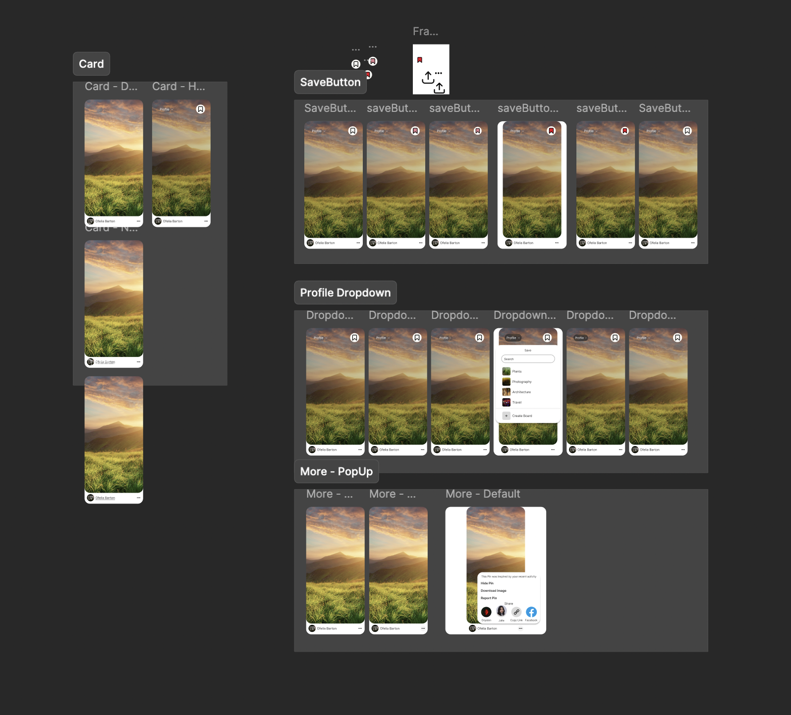

Click here for the Final Build
For my IDM 241 class, I created interactive and engaging microinteractions for around the layout for Pinterest, incorporated my skills of using HTML, CSS, and Javascript from previous classes.
In this class, we learned to recognize and develop elements of microinteractions to create a holistic digital experience.
Spanning 10 weeks, from September to December 2024, this solo project allowed me to showcase not only my technical and design skills, but also my creative problem solving abilities.
The challenge lay in identifying minor details of the digital experience, from hovering enlarged icons to color switches on clicks.
I began the project by seeking design inspiration and creating layouts in Figma. The goal was to establish a modern and approachable aesthetic, with vibrant colors and typography that added a fun and inviting feel. The branding was kept short and impactful, and I prioritized responsive design to ensure the site’s usability across different devices.
Once the design was finalized, I created prototpes of the interactions
In the area of interaction design, I slowly incorporated more objects and ways to interact with them as the weeks progressed. Beyond showing my progress through code every 2 weeks, I made sure to explain the expectations for my microinteractions by clearly listing the triggers, rules, feedback, loops & modes for them.
The final design brought together a series of thoughtful microinteractions that make the original portfolio more dynamic and engaging.
In the end, I was able to create a responsive and fully fledged digital experience of the Pinterest interactions.